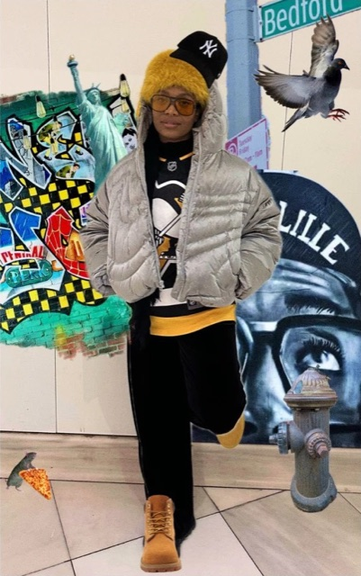

I’m a queer Jamaican-born designer, artist, haiku aficionado, former professor, and homo sapiens sapiens!
My love of art, research, and problem-solving led me to pursue a career in experience design. Much of my work has been informed by my interests in design thinking, liberatory design, human-computer interaction, social activism, civic tech and gameful technologies.
I thrive in deeply collaborative environments and value having teammates that aren’t afraid to share their ideas or push back on my opinions. I take pride in cultivating a safe space for peers to show up fully, as themselves, so they can do their best, most meaningful work.
When I’m not designing the things in Figma, you’ll find me dreaming of ways to address the world’s most wicked problems, napping under my heated blanket, playing Fortnite, or binge watching my favorite animes on Crunchyroll.